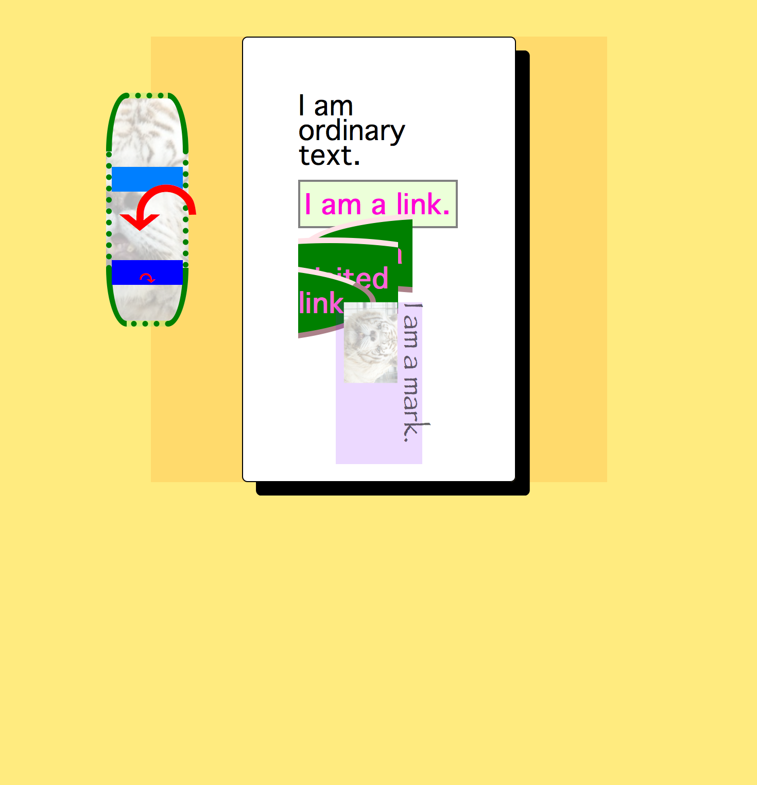

Twine 2 is a tool for the creation of interactive fiction. Unlike its predecessor, Twine 1,
which used a desktop application, Twine 2 is browser-based. Like Twine 1's story formats
(Jonah, Sugarcube, etc.), Twine 2 currently has three story formats: Harlowe (the primary
format, and the subject of this tutorial), Snowman, and a port of Sugarcube.
There are two very significant differences between Harlowe and Twine 1:
-
The Twine logic is written in an entirely new syntax, called TwineScript.
I'm not going to cover TwineScript, particularly given that
Leon Arnott,
the developer of Harlowe, has written documentation thereon
here.
-
The rendered passages make use of custom DOM elements, which are new and
largely unused (as of 03/2015, only Chrome and Opera allow full use of
document.registerElement, Firefox requires a flag to be set, and Safari
and IE have no support at all). Twine 2 uses a shim to enable the creation
of custom elements in all browsers, but chances are fairly high that most people
aren't terribly aware of custom elements either in concept or execution.
But, furkle, I can hear you saying, I don't care about this! I'm thinking about narrative,
and aesthetics, and probably about cyberpunk and gender and all sorts of other cool stuff,
not the under-the-hood specifics of Harlowe's implementation!
And that's fine! You're allowed to not care. But, as it stands, if you want to modify
anything at all about the appearance of your Harlowe story,
save for the background, you're going
to want to use CSS. (To be fair, there are ways you can accomplish certain aesthetic
transformations using TwineScript macros, but that's considerably more involved, and
you're probably less aware of TwineScript than you are of CSS.) And if you want to use
CSS, you need to be aware that, while the CSS properties affecting custom elements are
mostly identical, the selectors you knew and loved, either from general web development or
from Twine 1, aren't going to work here.
But it's okay! I've got things to say about all the most important selectors for Harlowe,
and an interactive tutorial below that allows you to use CSS more or less identically
as you would in your own Harlowe fiction and see the results immediately. (A note ahead
of time: this tutorial is not going to work terrifically well on a cell phone. There's
too many small little parts and scrollbars and etc. Then again, I'm assuming most of you
are sane and lucky enough not to be developing Twines on a cell phone, so this shouldn't
be an issue.)
If you're completely new to CSS, there's plenty of general resources out there on CSS - here are a couple tutorials, one on the
Mozilla Developer Network,
and another on
W3Schools.
(If anyone has any better resources or suggestions thereon, feel free to
e-mail me: furkle @ this domain; or tweet me: @furkle_)
Either way, a quick note on terminology:
div {
background-color:
#0f0f0f;
}
The entirety of the above, from "div" to the closing bracket (the curly/squiggly one), is
a rule. The portion in green is a selector. The portion in blue is a
property. The portion in red is a value. The property:value; syntax is
mandatory, including the semicolon.
Okay, now let's get into the specifics of Harlowe's object model!
html is the root element for the entire document,
and any properties in this selector will affect everything within your Twine passage.
One reason to use this selector
would be for a background that covers the entirety of the page, or in case you
want your Twine story to be rendered at a fixed size independent of the size of
the browser window.
Color values in CSS can take five different forms: two hexadecimal, and two decimal,
and plain-text color names like "black," "red," "pink," etc.
Hexadecimal goes from 0 to F, where A is 10, B is 11, etc. and F is 15.
The max value for any color is FF, or 255 in decimal.
When used to represent color, each third of the string represents a different color
- red, green, and blue, in that order. So the components of a six-length hex
string are like so: #ffffff
Here's red in 6-length hex: #ff0000
And here's the same color in 3-length hex, in which each value is effectively
doubled (f -> ff, 0->00, etc.), resulting in an identical color value of the
above 6-length hex:
#f00
The max value for decimal notation is 255. So if we wanted to represent red
with decimal notation, it'd look like this:
Here's red in decimal notation: rgb(255, 0, 0)
And there's one final way you can use decimal notation, which adds an alpha channel
to the color. This allows you to specify the transparency of the color.
The transparency of a color can range from 0 (totally transparent) to 1 (totally untransparent).
So if we wanted to represent red at half-transparency with decimal notation, it'd look like this:
Here's red in decimal notation with an alpha channel:
rgba(255, 0, 0, 0.5)
Try changing the background-color property in the interactive tutorial! Each CSS selector
in the tutorial begins with a background-color property, but you can either delete this or just
write a new one - the most recently-added property overrides any earlier settings of the same
property. Try entering
background-color: rgba(255, 215, 0, 0.5);
into the HTML selector and then hovering
or checking it.
How nice!
tw-story is the root element for everything generated by Twine 2. Currently,
the only element contained therein is tw-passage element. This can be used to
style the overall appearance of the rendered elements of your story. By default,
tw-story occupies the same size and position as tw-passage.
tw-passage is the element in which the passage text is rendered. (Duh.)
If you're interested in styling the appearance of any given Twine passage, this
is a good element to use.
The example below uses an adaptation of Leon Harnett's Hypertwine style.
There are more than a few propertiess that may be unfamiliar in the example below.
-
width controls the width of the element. This can be an absolute
measurement, in px, em, etc., or a relative measurement, in percent. For
relative measurements, the element from which the relative measurement
is determined is largely dependent on the position property. With the default
Harlowe styling, width: 60% will size the tw-passage element so that it
is 60% of the width of the tw-story element.
-
padding creates space between the content within an element and the edge
of the element.
-
border creates a border around the element. This has three attributes:
size, style, and color. Color is the only optional value. Border can have
eight different values: dotted, dashed, solid, double, groove, ridge, inset,
and outset. Any number of these styles can be combined.
Try them all out! Bear in mind that some styles/combinations thereof do not
appear the same on different browsers.
-
border-radius controls the degree to which the the corners
of the element are rounded. This can be a single value, in which the same
rounding is applied equally to all four corners, or a set of four values,
each of which corresponds respectively to top-left, top-right, bottom-right,
and bottom-left. Note that you don't need to define a border to be able to use
border-radius. Tip: if you want a circular element, set border-radius: 50%;
on an element with equal width and height.
-
font-family sets the font used within the element.
-
font-size sets the size of the text used within the element.
-
color sets the color used within the element.
-
text-align sets the alignment of the text. This can have the values
left, center, or right.
-
box-shadow creates a drop shadow effect around the element. This requires
four values: color, x-position, y-position, and width. x-position and y-position
determine the amount the drop shadow is offset from the center. Negative values
result in a drop shadow which is further left and above the center, respectively,
and positive values in a drop shadow which is further right and below the center.
The width determines how large the drop shadow is.
Copy and paste this into the tw-passage selector:
width: 60%;
padding: 2em;
margin: auto;
border: solid #000 0.05em;
border-radius: 0.2em;
font-family: Geneva, "Helvetica Neue", Helvetica, sans-serif;
font-size:1.5rem;
color:#000;
text-align:left;
background-color:#fff;
box-shadow: #000 0.5em 0.5em 0;
tw-link is the element into which each of your TwineScript links
is embedded. These are constructed within your passages as (link-goto: "foo", "bar"),
[[foo]], [[foo->bar]], or [[bar<-foo]].
Copy and paste this into the tw-link selector:
color: rgb(255, 0, 215);
padding: 7.5px;
border: 2px solid gray;
tw-link.visited is a combination of two selectors: the tw-link element,
and the .visited class. Unlike the anchor element you may be used to, the tw-link
element can't (I believe) use the :visited pseudo-element, so Harlowe adds the .visited class
to any element that has already been visited.
As you can see in the tutorial (assuming you don't have any conflicting properties
in effect on tw-link), Harlowe defaults to the familiar Web 1.0-style purple visited link.
Personally I don't like this - I find that informing a user which links correspond
to passages they've already visited gets in my way of telling a story, and gets
in their way of enjoying it without trying to figure out what it means to
be revisiting a passage. Will it be different? Could it be a way they lost/died
earlier? Are they accidentally going backwards? Better to just avoid it, right?
Class selectors can be used on their own, or can be combined with other selectors.
For example, tw-link.visited means "select all tw-link elements in the document
which also have the class .visited".
(HTML elements can have a theoretically unlimited number of classes.)
Alternately, a space between tw-link and .visited would mean "select all elements which
are a child of a tw-link element and also have the class .visited." (Unless you change the Harlowe DOM,
it's unlikely this selector would match any elements.)
This page is a decent primer on
the concept of CSS selectors, and here are a
couple of
references
for numerous selector
syntaxes and combinations thereof, many of which may well look like total nonsense. Don't worry!
Though much of this may look complicated, it does get easier with time and practice and dedication.
You're smart, and your Twine ideas are awesome, and they're worth the effort!
Copy and paste this into the tw-link selector:
color: rgb(255, 100, 215);
background-color: green;
padding: 15px;
border: 5px outset pink;
border-radius: 50%;
tw-sidebar is an element that (currently) contains the elements used to undo and redo
link choices. By default, the sidebar is placed near the top of the screen and to the left of
the default position of the passage text.
There are a few new properties here. background-image does what it sounds like.
This can take two forms: an url() contained web address, which can point to
an external web address (beginning with http://), a relative path (foo.jpg),
which looks inside the directory from which the HTML document is opened,
or an absolute path (/directory/foo.jpg), which looks at the root directory
of the file-system or web site.
Alternately, if you'd prefer to contain the entirety of your Twine story in a single
file, you can use data URLs, base64-encoded text, within your CSS. Here's
an example:
data:image/png;base64,iVBORw0KGgoAAAANSUhEUgAAAAUA
AAAFCAYAAACNbyblAAAAHElEQVQI12P4//8/w38GIAXDIBKE0DHxgljNBAAO
9TXL0Y4OHwAAAABJRU5ErkJggg==;
Which looks like this:

There are plenty of sites which will convert your images into base64. However, you'll
note that even a small image requires a lot of text, and from my
understanding data URLs are less efficient than images, so it's more suitable for
smaller and lower-resolution images.
(Unfortunately, data URLs currently don't work within the interactive tutorial.
Sorry :[ )
background-position allows you to set the position of the background
relative to the element in which it is being placed. You can use literals like
left, right, top, bottom, and center, or
relative percentages, or exact dimensions like px or em.
If you use relative or exact, you can provide either one or two values. If one is
provided, it is used as the amount the background is moved to the left/right; if two are
provided, they are used as the amount the background is moved to the left/right, and
up/down, respectively.
background-size determines how large your background is.
Here are
full explanations of each background-size value.
background-repeat is fairly simple. If the image doesn't cover the entirety of
the element, should it be repeated out to the edge of the element, or not? This can
take the values repeat, which repeats along both the x- and y-axes, repeat-x, which
only repeats along the x-axis, repeat-y, which only repeats along the y-axis, or
no-repeat, which doesn't repeat at all.
Copy and paste this into the tw-link selector:
color: black;
border: 5px dotted green;
padding-bottom: 0.8em;
border-radius: 25%;
background-image: url(http://furkleindustries.com/images/furkle.png);
background-position: center;
background-size: cover;
background-repeat: no-repeat;
How pretty! How functional! Truly, a stunning and novel synthesis of form,
function, and pathos.
(Note that the reason you probably can barely see the undo and redo arrows
is because the Harlowe default style has sets the tw-icon opacity to 0.15, and
so the value of the opacity set in tw-sidebar is not inherited. For a fairly
in-depth look at exactly how the browser decides which of many possible
values set for any given property to use for a specific element, here's an article on
specificity and inheritance in CSS.)
tw-icon is the element used for the undo and redo arrows. Note that, ordinarily,
neither the undo nor the redo arrows are visible when a story is begun, given that there
is nothing to undo or redo. For the purposes of the interactive tutorial, I've forced
the visibility of the tw-icons and disabled their functionality by setting
pointer-events to none.
Copy and paste this into the tw-icon selector:
opacity: 1;
color: red;
This is all really beginning to come together.
tw-icon.undo is a selector which combines the element type
for the undo and redo arrows, tw-icon, and the class given to the
redo arrows, .undo. Note that, if you were to place a space between
the element name and the class name, you would get no results, because you'd
then be searching for elements contained within a tw-icon that also had
the class .undo.
Copy and paste this into the tw-icon.undo selector:
font-size: 5em;
Excellent. A masterpiece in the works.
tw-icon.redo is a selector which combines the element type
for the undo and redo arrows, tw-icon, and the class given to the
redo arrows, .redo.
Copy and paste this into the tw-link.visited selector:
font-size: 1em;
mark is used within TwineScript to allow any HTML therein to be created
unaffected and unchanged. Just take any normal HTML and wrap it in
<mark></mark>. For example:
I am a mark!
There are a couple new properties here: font-family, which
defines the font type used in the element. W3Schools has a guide to
using fonts in a web-safe way here.
The second is the transform property, which allows for a variety
of 2D and 3D transformations of HTML elements. Mozilla Development Network
has a fairly exhaustive list of transformations here, and there are plenty of websites like
this that allow you to manipulate,
preview, and generate CSS for different combinations of transformations.
Note that, while the interactive tutorial uses jQuery, which quite kindly smoothes over
a lot of browser compatibility issues, transforms are new enough that you'll need to
use vendor prefixes
to support older browsers. (This probably isn't an issue with Twine, given the
aforementioned ES5 shim, but it's good practice.)
Copy and paste this into the mark selector:
font-family: Papyrus;
transform: rotate(90deg);
Perfect. A furkle and friends original.
You made it through! It wasn't that bad, was it? (If it was, please tell me
how I can make it less not good, and more not bad.)
Two assigments:
One: use what you just learned about CSS to create something that looks better
than the example.
Two: make more Twines!
Love,
furkle
A keepsake for our time spent together, and the masterwork we made.
